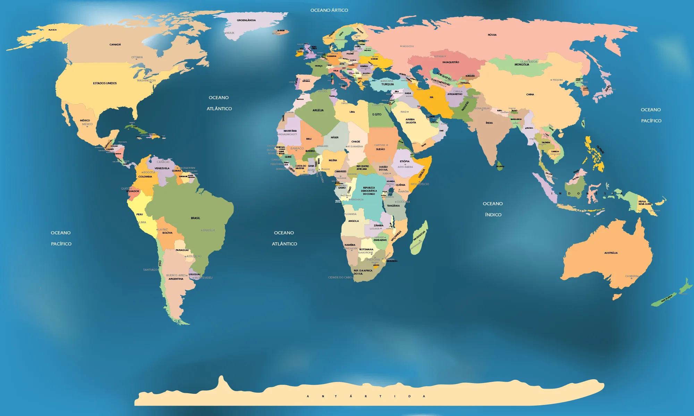

Parte 1: O Desafio do Relojoeiro
Observe o relógio e clique na resposta correta. What time is it?
Parte 2: O Explorador do Tempo
A hora não é a mesma em todos os lugares! Clique nos pontos vermelhos no mapa para descobrir a hora em diferentes cidades.
Selecione uma cidade no mapa
A hora local em São Paulo é aproximadamente .

Atividade Bônus: Sol e Lua Pelo Mundo
Veja onde é dia ou noite! A barra abaixo representa as 24 horas. Depois de clicar em uma cidade no mapa, veja onde ela aparece aqui.